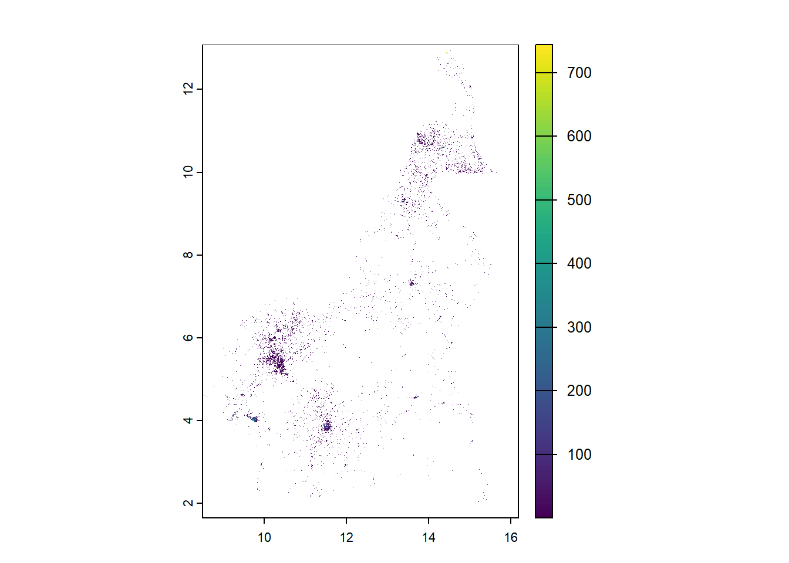
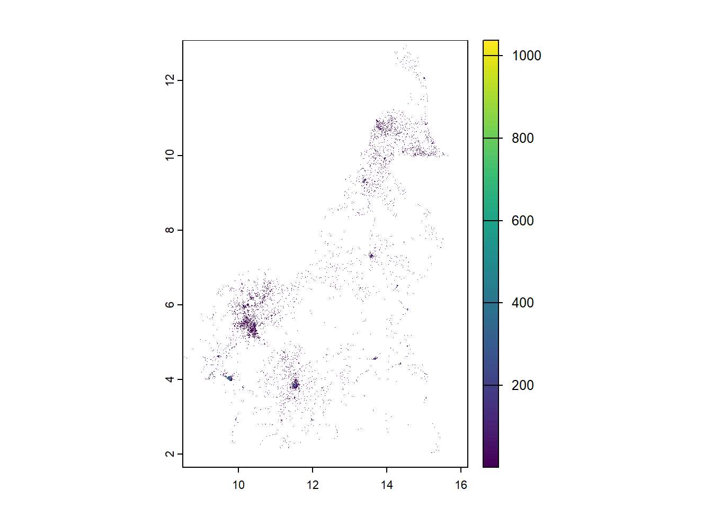

10 Population Prediction and Uncertainty Quantification
This module looks at population prediction methods and associated uncertainty quantification methodology, starting with covariate stacking. Module 10 also covers posterior distribution simulation, aggregation to area units of interest and grid cell/level prediction.
#install raster processing packages
install.packages("terra")
install.packages("tictoc")
install.packages("exactextractr")#load raster processing packages
library(tidyverse)
library(terra)
library("tictoc")
library(feather)
library(sf)10.1 Covariate stacking
In order to predict population values across the entire population across the entire country, the covariates available require stacking and the corresponding values of the covariates extracting. However, given that across a country, the entire area is not inhabited, only those points which are settled (inhabited) are of interest, so the covariate information extracted requires some manipulation to obtain only the settled raster values. This section explores these methods for the Cameroon dataset.
Firstly, the rasters available that are going to be stacked need to be imported into the R environment.
#import all rasters
raster_list <-list.files(path = raster_path4, pattern = ".tif$",
all.files = TRUE, full.names = FALSE)
#see the rasters in the list
raster_list## [1] "acled_conflict_data_2021_CMR_ed_masked.tif" "CMR_buildings_count.tif"
## [3] "CMR_buildings_total_area.tif" "CMR_Department.tif"
## [5] "CMR_dst_in_water_100m_2000_2012.tif" "CMR_esaccilc_dst140_100m_2015.tif"
## [7] "CMR_esaccilc_dst200_100m_2015.tif" "CMR_osm_dst_localroads.tif"
## [9] "CMR_osm_dst_railways.tif" "CMR_Regions.tif"
## [11] "CMR_Settlement_Classification.tif" "CMR_viirs_100m_2020.tif"There are two approaches to stacking the covariates in R available. The first is to stack all the covariates together at once and then get the relevant raster values with the values() function from the terra package, including the covariate stack as an argument and specifying dataframe = TRUE to return the values as a data frame. This option however, is not always appropriate as extracting the values at once can take a long time and particularly in cases where there are more than a few covariates available, the code can be too much for many computers to handle.
#stack all rasters
stack_covariates <- rast(paste0(raster_path4, c(raster_list)))
#get raster values
covs_raster_values <- terra::values(stack_covariates, dataframe = TRUE)Alternatively, the covariates can be stacked in batches, which is the preferred method of covariate stacking as it does not have as high of a computational burden associated. To use this approach, first the desired size of the batches must be specified, in this case, the size is 2. Then, to cycle through each of the covariates available, a for() loop can be used to make the process more automated and hence more efficient.
However, before starting the loop, to write only the settled pixels (covariate values which are associated with a pixel where there is a building present) to file, the raster file for the building count can first be processed, with the building count values obtained with the values() function. Once the values are obtained, this covariate should be removed from the raster list to not repeat the processing in the loop.
#read building count raster and get values
b_count <- rast(paste0(raster_path4, "CMR_buildings_count.tif"))
b_count <- terra::values(b_count, dataframe = TRUE)
#remove "CMR_buildings_count.tif" from list
process_rasters_list <- raster_list[-c(2)]
process_rasters_list## [1] "acled_conflict_data_2021_CMR_ed_masked.tif" "CMR_buildings_total_area.tif"
## [3] "CMR_Department.tif" "CMR_dst_in_water_100m_2000_2012.tif"
## [5] "CMR_esaccilc_dst140_100m_2015.tif" "CMR_esaccilc_dst200_100m_2015.tif"
## [7] "CMR_osm_dst_localroads.tif" "CMR_osm_dst_railways.tif"
## [9] "CMR_Regions.tif" "CMR_Settlement_Classification.tif"
## [11] "CMR_viirs_100m_2020.tif"The first step in the loop is to subset the available rasters to select your ‘batch’. Once you have the subset, the rast() function can be used to load that batch of covariates. As with the first approach, to obtain the raster values, the values() function is used. Since only the settled points are wanting to be written to file, the filter() and select() functions can be used to subset the covariate values and keep only those which correspond to settled points, using the building count raster and corresponding values as a reference. The final results can then be exported as a .feather file with the write_feather() function from the feather package. Whilst it it is not a necessity, the rm() function can be used to free up memory for the raster batches and their values created within the loop to help R work more efficiently.
#loop through covariates in batches
for (i in seq(1, length(process_rasters_list), batch_size)) {
batch_covs <- process_rasters_list[i:min(i + batch_size - 1,
length(process_rasters_list))]
#load batch of covariates rasters
covs_raster <- rast(paste0(raster_path4, batch_covs))
#get raster values
covs_raster_values <- terra::values(covs_raster, dataframe = TRUE)
#write only settled pixels to file
covs_raster_values <- covs_raster_values %>%
cbind(b_count) %>%
filter(CMR_buildings_count > 0) %>%
dplyr::select(-CMR_buildings_count)
#write processed covariate values to a feather file
feather_output_path <- paste0(output_path, "Processed_Covariates_", i, "_to_",
min(i + batch_size - 1,
length(process_rasters_list)), ".feather")
feather::write_feather(covs_raster_values, feather_output_path)
#free up memory
rm(covs_raster, covs_raster_values); gc()
}Once the raster values have been obtained, the files can be read back to the memory with the dir() function and then bound together.
## [1] "Processed_Covariates_1_to_2.feather" "Processed_Covariates_11_to_11.feather"
## [3] "Processed_Covariates_3_to_4.feather" "Processed_Covariates_5_to_6.feather"
## [5] "Processed_Covariates_7_to_8.feather" "Processed_Covariates_9_to_10.feather"#bind the files
raster_values <- myfiles %>%
map(function(x) read_feather(file.path(output_path, x))) %>%
reduce(cbind) From the modelling in Module 8, it was found that for the Cameroon data, the covariates x2, x16, x20, x24, x31, x36, x40 were all statistically significant and had a notable relationship with the population density. Therefore, these are the covariates that are of interest for prediction. However, the names of x(.) are arbitrary, so the significant variables should be renamed for ease of understanding and aid in the interpretation of any results. The names of the variables can be obtained from the var_names.csv and manually input as below.
#load the variable names file
var_names <- read.csv(paste0(data_path,"var_names.csv"))
var_names[c(2, 16, 20, 24, 31, 36, 40),]## X var_names var_names2
## 2 2 mean.acled_conflict_data_2021_CMR_ed_masked x2
## 16 16 mean.CMR_dst_in_water_100m_2000_2012 x16
## 20 20 mean.CMR_esaccilc_dst140_100m_2015 x20
## 24 24 mean.CMR_esaccilc_dst200_100m_2015 x24
## 31 31 mean.CMR_osm_dst_localroads x31
## 36 36 mean.CMR_osm_dst_railways x36
## 40 40 mean.CMR_viirs_100m_2020 x40#rename variables
raster_values1 <- raster_values %>%
rename(x2 = acled_conflict_data_2021_CMR_ed_masked,
x16 = CMR_dst_in_water_100m_2000_2012,
x20 = CMR_esaccilc_dst140_100m_2015,
x24 = CMR_esaccilc_dst200_100m_2015,
x31 = CMR_osm_dst_localroads,
x36 = CMR_osm_dst_railways,
x40 = CMR_viirs_100m_2020)To estimate the population for the settled points, the x,y-coordinates of the centroids of each settled pixel needs to be obtained from the building count dataset. To obtain these coordinates, the raster with the building counts must be read into the environment and then used with the function xyFromCell() with arguments for the building count raster and a sequence from 1 to the number of cells in the raster.
#read raster
r1 <- rast(paste0(raster_path4, "CMR_buildings_count.tif"))
#get the xy coordinate of the centroid of each pixel as a data frame
coord <- xyFromCell(r1, 1:ncell(r1))
head(coord)## x y
## [1,] 8.498333 13.0775
## [2,] 8.499167 13.0775
## [3,] 8.500000 13.0775
## [4,] 8.500833 13.0775
## [5,] 8.501667 13.0775
## [6,] 8.502500 13.0775The coordinates can then be combined using the cbind() function with the building count values obtained above, before removing the unwanted objects (the values created above for r1, coord and b_count) from the R environment as they take up a lot of memory, making the processes less efficient.
#cbind building count to coordinates
stack_coord <- cbind(b_count, coord)
#remove unwanted object from memory
rm(r1, coord, b_count); gc()## used (Mb) gc trigger (Mb) max used (Mb)
## Ncells 8487207 453.3 22837581 1219.7 22837581 1219.7
## Vcells 690256478 5266.3 1408294652 10744.5 2195989792 16754.1Once the coordinates and corresponding building counts are combined, the filter() function can be used to filter out the desired (settled), so only the pixels containing buildings remain.
To predict the population (either using only the intercept or also using covariates) the stack of building count values and corresponding coordinates need to be added to the original dataset, in this case done with the cbind() function.
10.1.1 Admin names
It is often of interest to identify the population size in different areas of a country, such as in a specific region or department, rather than as the country as a whole. For ease of interpreting the results, it is beneficial to obtain the admin names and add them to the dataset.
To add these admin names to the dataset, first the shapefiles containing the relevant information needs to be read into the R environment.
#read in the regions and department datasets
regions <- st_read(paste0(shapefile_path, "Region_SHP.shp"))## Reading layer `Region_SHP' from data source
## `F:\Study\WorldPop Training Materials\GitBook\wp_training_manual\data\CMR\Shapefiles\Region_SHP.shp'
## using driver `ESRI Shapefile'
## Simple feature collection with 10 features and 2 fields
## Geometry type: MULTIPOLYGON
## Dimension: XY
## Bounding box: xmin: 945997.2 ymin: 182845.8 xmax: 1802307 ymax: 1458913
## Projected CRS: WGS 84 / World Mercator## Reading layer `Departement_SHP' from data source
## `F:\Study\WorldPop Training Materials\GitBook\wp_training_manual\data\CMR\Shapefiles\Departement_SHP.shp'
## using driver `ESRI Shapefile'
## Simple feature collection with 58 features and 3 fields
## Geometry type: MULTIPOLYGON
## Dimension: XY
## Bounding box: xmin: 945997.2 ymin: 182845.8 xmax: 1802307 ymax: 1458913
## Projected CRS: WGS 84 / World MercatorThe shapefiles containing the admin names need to be converted to a data frame to obtain the ID and region label (denoted in French as libelle for the Cameroon dataset).
#convert region shapefile to data frame and get id and 'libelle'
regions <- regions %>%
as_tibble() %>%
dplyr::select(id, libelle) %>%
rename(Regions = id, Regions_libelle = libelle) #rename id as regions
#convert department shapefile to data frame and get id and 'libelle'
dept <- dept %>%
as_tibble() %>%
dplyr::select(id, libelle) %>%
rename(Department = id, Department_libelle = libelle) #rename variablesThe data frames for region and department can then be joined with the dataset using the function full_join().
#join regions to data
prediction_covs <- full_join(raster_values1, regions, by = "Regions")
#join department to data
prediction_covs <- full_join(prediction_covs, dept, by = "Department")The select() function can then be used to sort the data in order as follows.
#sort data in order
prediction_covs <- prediction_covs %>%
dplyr::select(Regions, Regions_libelle, Department, Department_libelle,
CMR_buildings_count, CMR_buildings_total_area,
CMR_Settlement_Classification,
starts_with("x"), y)The x and y variables can be renamed as lat and lon to correspond with the latitude and longitude coordinates with the rename() function and use the filter() function to filter out any rows of data with NA for the settlement classification.
#rename x and y as Lat and Lon and filter settlement classification with NA
prediction_covs <- prediction_covs %>%
rename(Lat = y, Lon = x) %>%
filter(!is.na(CMR_Settlement_Classification)) Finally, the write_rds() function can be used to export the data as follows.
10.2 Grid cell/pixel level prediction
Gridded population data is beneficial as it allows for the integration with other datasets. Additionally, there is a major benefit that with gridded population data, population estimates can be calculated for various geographic units at a range of scales. For example
- EAs, wards, constituencies, districts
- Health catchments
- Within a specified distance of a feature (for example, within 5km of a health facility)
The idea here is to use model parameter estimates from the fitted model to make predictions at the grid cell level with the extracted geospatial covariates at 100m resolution. The corresponding uncertainty estimates for the population predictions at various administrative levels can also be obtained.
As with all other methods, the relevant packages should be installed and loaded.
#install the relevant packages
install.packages("kableExtra")
install.packages("spdep")
install.packages("INLA")#load the relevant packages
library(INLA)
library(kableExtra)
library(sf)
library(tidyverse)
library(spdep)
library(tmap)
library(tictoc)
library(terra)
library(dplyr)For visualisation purposes of the results, the scientific notation for all the variables can be turned off with the following code.
In Module 8, various models were fitted, ranging from the simple linear model to the Bayesian hierarchical models. In this section, the INLA SPDE approach is used to demonstrate how to make predictions using the more advanced Bayesian Geostatistical Model.
10.2.1 Pre-processing
First the data should be loaded into the R environment.
#load csv file
Data_CMR <- read.csv(paste0(data_path,"Pop_Data_Complete.csv"))
#EA shapefile
ea_shp <- st_read(paste0(data_path ,"Pop_Data_Complete.gpkg")) ## Reading layer `Pop_Data_Complete' from data source
## `F:\Study\WorldPop Training Materials\GitBook\wp_training_manual\data\CMR\Pop_Data_Complete.gpkg'
## using driver `GPKG'
## Simple feature collection with 1592 features and 50 fields
## Geometry type: MULTIPOLYGON
## Dimension: XY
## Bounding box: xmin: 8.498025 ymin: 1.653369 xmax: 16.1904 ymax: 12.96129
## Geodetic CRS: WGS 84The centroid of the EA shapefile needs to be extracted as latitude and longitude coordinates and added into the Data_CMR .csv file. This can be done using the as() and st_geometry() functions to convert the shapefile to a spatial object and using the coordinates() function to extract and add the coordinates to the demographic data.
#convert shapefile to a spatial object
shp <- as(st_geometry(ea_shp), "Spatial")
#add the lat-long coordinates to the data
Data_CMR$long <- coordinates(shp)[,1] #extract and add the longitude to the data
Data_CMR$lat <- coordinates(shp)[,2] #extract and add the latitude to the data
#view first six rows of the data as a summary
head(Data_CMR, 6)## X EA_ID Department dept_libelle Regions region_libelle Total_Pop Settlement_Type
## 1 1 ABONG - MBANG_6 30 Haut Nyong 3 Est 890 1
## 2 2 AFANLOUM_702 3 Mefou et Afamba 2 Centre 815 4
## 3 3 AKOEMAN_3 49 Nyong et Soo 2 Centre 764 4
## 4 4 AKOM II_702 25 Ocean 10 Sud 746 4
## 5 5 AKONOLINGA_18 50 Nyong et Mfoumou 2 Centre 1109 4
## 6 6 AKONOLINGA_700 50 Nyong et Mfoumou 2 Centre 1357 4
## Total_Building_Count Total_Building_Area x1 x2 x3 x4 x5 x6
## 1 286 32018.38 240337.7 86203.41 413765.8 139978.61 86203.41 184933.17
## 2 395 38397.15 338154.9 36501.53 317968.1 36501.53 36501.53 74746.61
## 3 367 33433.51 437903.8 54406.30 278816.8 72425.01 54406.30 72425.01
## 4 269 24597.57 572474.0 65059.10 207275.2 167467.12 65059.10 171884.52
## 5 286 39113.68 346930.5 47410.98 334817.6 80121.03 47410.98 80121.03
## 6 402 30872.22 344902.1 55245.77 333230.8 76245.29 55245.77 78916.31
## x7 x8 x9 x10 x11 x12 x13 x14 x15 x16
## 1 184933.17 49.00933 0.8580208 0.5127055 1874.8511 124.96131 43.36115 663.00330 369.54599 66.4226456
## 2 74746.61 94.78092 0.3557110 0.2034208 294.0987 102.34338 39.95544 96.79045 264.67972 28.3830357
## 3 72425.01 88.32083 0.3629119 0.2126397 328.2499 90.47405 36.73468 104.04270 177.91858 22.1087456
## 4 171884.52 399.27695 0.3817135 0.2085105 403.9308 100.72127 39.06967 128.10530 63.06371 29.8604965
## 5 80121.03 65.29633 0.5584586 0.3535644 1485.4635 132.72063 45.55459 590.01727 262.23849 0.5587888
## 6 78916.31 60.77288 0.3845364 0.2158287 318.3337 79.70691 34.87637 92.70645 264.28845 4.6560779
## x17 x18 x19 x20 x21 x22 x23 x24 x25
## 1 0.2506842 0.2168530 0.8513528 53.339569 571.1937 1.780275 -0.05533693 118.72293 0.001490207
## 2 0.3522204 -0.2481708 11.8486433 11.467803 493.3647 30.267328 26.14026642 77.73151 0.023819378
## 3 2.0923870 -1.9790570 33.6847458 55.099686 515.8448 38.471977 22.51198578 201.92075 0.024310285
## 4 7.1534176 -7.0361733 65.0350876 65.647385 483.9221 62.489433 34.99201965 320.03601 0.045389920
## 5 0.6619807 -0.3192018 0.7926053 1.597502 531.0815 4.531395 0.59316117 115.86395 0.014609964
## 6 0.4313623 -0.3258749 8.7227964 5.226479 525.6237 9.087230 7.94695139 107.66605 0.018198114
## x26 x27 x28 x29 x30 x31 x32 x33 x34
## 1 0.01200000 0.00004149579 297.4118 2296.646 288.1877 14.69919 225.3033 390.2323 476.4956
## 2 0.02870464 0.00004402846 297.6783 35368.785 47777.6641 11518.32129 8068.7568 48683.5234 26756.2227
## 3 0.02861884 0.00005605924 297.4679 21204.406 28928.2246 1605.29187 38670.0625 40177.6914 31366.0879
## 4 0.04607061 0.00010642956 298.1458 34093.812 40311.1211 9626.27930 6508.7632 35146.3125 43208.0781
## 5 0.03405531 0.00004095252 297.7811 1161.185 1691.4470 630.90527 37276.1211 1713.5939 2773.5483
## 6 0.02470175 0.00004092990 297.7823 7917.528 8837.5303 996.53833 29232.8477 9127.7480 9087.2295
## x35 x36 x37 x38 x39 x40 x41 long lat
## 1 2.410922 99782.04 435.05762 722.6469 694.9709 0.8488668 499.7907 13.17765 3.985047
## 2 8.193155 34135.90 6064.46387 20564.3906 732.0835 0.1883050 387.9030 12.10438 4.195674
## 3 14.047594 51499.27 10335.01562 5314.2729 684.1978 0.1645098 315.3396 11.57054 3.214603
## 4 13.598531 102436.87 23514.07422 8531.0508 603.2908 0.2087497 201.3288 10.45882 2.733207
## 5 1.513200 77467.59 87.84882 354.3566 647.6537 0.3821937 392.5313 12.23236 3.776276
## 6 3.314217 73533.62 3984.64355 4101.4194 691.9840 0.2072315 393.2006 12.22670 3.853698Using the piper operator and the mutate() function, the population density can be calculated, which is required later in the process, for example, in the model fitting.
As seen previously, the covariates need to be standardised so that they are on the same scale, which will aid in the modelling process. The same function as seen in Module 8 (Section 4.2) is given below, and can then be applied to standardise the covariates. This resulting value is also known as a z-score.
#standardisation function for model covariates
stdise <- function(x)
{
stds <- (x - mean(x, na.rm = TRUE))/sd(x, na.rm = TRUE)
return(stds)
}
#create new data frame to contain standardised covariates
Data_CMR_std <- Data_CMR
#standardise the covariates only
cov_vars <- paste0("x", 1:41)
Data_CMR_std[, cov_vars] <- apply(Data_CMR[, cov_vars], 2, stdise)
#summary of covariates before and after standardisation
head(Data_CMR[,cov_vars[1:5]])## x1 x2 x3 x4 x5
## 1 240337.7 86203.41 413765.8 139978.61 86203.41
## 2 338154.9 36501.53 317968.1 36501.53 36501.53
## 3 437903.8 54406.30 278816.8 72425.01 54406.30
## 4 572474.0 65059.10 207275.2 167467.12 65059.10
## 5 346930.5 47410.98 334817.6 80121.03 47410.98
## 6 344902.1 55245.77 333230.8 76245.29 55245.77## x1 x2 x3 x4 x5
## 1 -0.62880443 1.10518418 1.5292650 0.2777396 0.89020837
## 2 -0.13168532 -0.01029845 0.7477583 -0.8029266 -0.09342136
## 3 0.37525087 0.39154679 0.4283667 -0.4277586 0.26092475
## 4 1.05915270 0.63063252 -0.1552609 0.5648168 0.47174994
## 5 -0.08708668 0.23454744 0.8852148 -0.3473849 0.12248313
## 6 -0.09739513 0.41038730 0.8722700 -0.3878613 0.27753826For the processes later, it is important that there are no NA values for the population density. Therefore, from the (standardised) demographic data, the NA values should be removed from the Density, which can be done using the drop_na() function.
10.2.2 INLA-SPDE approach
In order to fit the Bayesian SPDE model with INLA, a mesh needs to be constructed using the same approach as in Module 8 (Section 6.1).
To begin with, the coordinates of the centroids should be defined.
#define centroid coordinates
coords <- cbind(Data_CMR_std$long, Data_CMR_std$lat)
summary(dist(coords))## Min. 1st Qu. Median Mean 3rd Qu. Max.
## 0.000 1.681 2.784 3.540 5.523 11.214Then the inla.nonconvex.hull() function can be used to define the boundary with the arguments for points (the 2D point coordinates), convex (the desired extension radius), concave (the minimal concave curvature radius) and resolution (the internal computation resolution). This is then followed by the inla.mesh.2d() function with arguments for the boundary (defined with inla.nonconvex.hull()), max.edge (adjusts the mesh node sizes between the inner and outer meshes), offset (adjusts the distance between the outer and inner meshes), cutoff (controls the minimum size of the triangles allowed).
#boundary construction
bnd <- inla.nonconvex.hull(points = coords,
convex = -0.03,
concave = -0.05,
resolution = c(100, 100))
#mesh construction
meshb <- inla.mesh.2d(boundary = bnd,
max.edge = c(0.1, 1),
offset = c(0.05, 1),
cutoff = 0.003)The resulting mesh can be plotted with the plot() function. Here it can be seen visually if the values in the above functions need to be adjusted to be more suitable.

## [1] 11692As in Module 8, Section 6, once the mesh is constructed, the SPDE can be built using the inla.spde2.matern() function, with the mesh constructed above as an argument, along with the arguments alpha and constr.
The next step laid out in Module 8 is to create the projection matrix with the inla.spde.make.A() function as follows.
The next step in the posterior distribution simulation process is to specify the spatial effect. This is done through using the function inla.spde.make.index() with an argument specifying the base name of the effect (in this case "spatial_effect"), and n.spde (the size of the model, extracted from the spde constructed above).
#specify the spatial effect
indexs <- inla.spde.make.index(name = "spatial_effect",
n.spde = spde$n.spde)From the covariate selection process, the covariate that were chosen as the most significant or “best” can be extracted from the (standardised) demographic dataset and added to a new variable for the covariates with the select() function from the dplyr package. Below, there is an additional covariate selected for Settlement_Type which is used as a random effect in the subsequent modelling.
#select covariates
covs <- Data_CMR_std %>%
dplyr::select(x3, x4, x7, x16, x20, x31, x37, x40, Settlement_Type)The inla.stack() function can then be used to stack the data, ready for model fitting, with the arguments data (a list containing the response variable), A (a list containing the projection A matrix created earlier and 1 to make the list of covariates), effects (a list containing the Intercept, the spatial index and the list of covariates) and tag (a quick name to call upon).
#stack the data for model fitting
stk.e <- inla.stack(data = list(y = Data_CMR_std$Density),
A = list(A,1),
effects = list(c(list(Intercept = 1),
indexs),
list(covs)
),
tag = 'est') Before fitting the INLA model, it is best to specify the model formula as seen before, in this case, there are the selected covariates, as well as random effects for the spatial_effect and the Settlement_Type. Following the model formula specification, the model is fitted with the inla() function, specifying the following arguments.
formula: the pre-defined model formula.data: the data stack.family: the likelihood family, in this case a gamma distribution is used, however, a lognormal distribution could also be used.control.predictor: computes the marginals of the linear predictor.control.compute: a list of logical statements for computing model diagnostics.verbose: logical statement indicating whether the function should run in a verbose mode.control.inla: a list containing the control variables.
#specify model
formula <- y ~ -1 + Intercept + x3 + x4 + x7 + x16 + x20 + x31 + x37 +x40 +
f(spatial_effect, model = spde)+
f(Settlement_Type, model = "iid")
#fit the inla model with a gamma distribution
res <- inla(formula = formula,
data = inla.stack.data(stk.e, spde = spde),
family = 'gamma',
control.predictor = list(A = inla.stack.A(stk.e), compute = TRUE),
control.compute = list(dic = TRUE, waic = TRUE, cpo = TRUE,
config = TRUE),
verbose = FALSE,
control.inla=list(int.strategy = "grid", diff.logdens = 4,
strategy = "laplace", npoints = 21))
summary(res)## Time used:
## Pre = 1.15, Running = 98.2, Post = 1.4, Total = 101
## Fixed effects:
## mean sd 0.025quant 0.5quant 0.975quant mode kld
## Intercept 1.185 0.080 1.031 1.184 1.345 1.184 0
## x3 -0.034 0.059 -0.149 -0.034 0.083 -0.034 0
## x4 -0.107 0.057 -0.220 -0.107 0.006 -0.107 0
## x7 -0.102 0.066 -0.233 -0.102 0.025 -0.102 0
## x16 -0.061 0.035 -0.130 -0.061 0.007 -0.061 0
## x20 0.105 0.037 0.032 0.105 0.177 0.105 0
## x31 -0.061 0.025 -0.110 -0.061 -0.011 -0.061 0
## x37 -0.036 0.031 -0.096 -0.036 0.025 -0.036 0
## x40 0.032 0.038 -0.043 0.032 0.106 0.032 0
##
## Random effects:
## Name Model
## spatial_effect SPDE2 model
## Settlement_Type IID model
##
## Model hyperparameters:
## mean sd 0.025quant 0.5quant 0.975quant mode
## Precision-parameter for the Gamma observations 3.42 0.143 3.17 3.41 3.73 3.37
## Theta1 for spatial_effect -2.88 0.130 -3.14 -2.88 -2.63 -2.88
## Theta2 for spatial_effect 2.12 0.141 1.84 2.12 2.40 2.12
## Precision for Settlement_Type 1043.92 1934.071 80.42 514.99 5397.20 189.05
##
## Deviance Information Criterion (DIC) ...............: 6611.44
## Deviance Information Criterion (DIC, saturated) ....: 1966.32
## Effective number of parameters .....................: 313.78
##
## Watanabe-Akaike information criterion (WAIC) ...: 6798.76
## Effective number of parameters .................: 352.24
##
## Marginal log-Likelihood: -3493.70
## CPO, PIT is computed
## Posterior summaries for the linear predictor and the fitted values are computed
## (Posterior marginals needs also 'control.compute=list(return.marginals.predictor=TRUE)')10.2.2.1 Predictions
In-sample predictions can be extracted using the inla.stack.index() function and the corresponding predicted density (computed through extracting summary.linear predictor[index, "mean"] from the above model) added into a new data frame with the data.frame() function.
#extract predictions
index <- inla.stack.index(stk.e, "est")$data
#compute predicted density and include in new data frame
in_sample <- data.frame(predicted_density =
exp(res$summary.linear.predictor[index, "mean"]))The observed population and observed density values from the (standardised) demographic data can be selected in order to be used later in the in-sample model metric assessment.
#select observed population, density and building count
metrics_data <- Data_CMR_std %>%
dplyr::select(Total_Pop, Density, Total_Building_Count) %>%
cbind(in_sample)The predicted density found above is multiplied by the Total_Building_Count extracted from the observed data to obtain the predicted population.
#predicted population = predicted density x observed total building count
metrics_data <- metrics_data %>%
mutate(predicted_population = predicted_density * Total_Building_Count)
#rename variables in proper format
metrics_data <- metrics_data %>%
rename(observed_population = Total_Pop, observed_density = Density)Finally, the model performance metrics can be computed for both the density and total population. Similar to as in Module 9, metrics such as the bias, MSE, RMSE and correlation are of interest, in addition to the inaccuracy and imprecision.
#density metrics
density_metrics <- metrics_data %>%
mutate(residual = observed_density - predicted_density) %>%
summarise(
Bias= mean(residual),
Imprecision = sd(residual),
Inaccuracy = mean(abs(residual)),
mse = mean((residual)^2),
rmse = sqrt(mse),
Corr = cor(observed_density, predicted_density))
density_metrics %>%
kable()| Bias | Imprecision | Inaccuracy | mse | rmse | Corr |
|---|---|---|---|---|---|
| 0.7522486 | 21.23032 | 2.618071 | 451.0086 | 21.23696 | 0.8579087 |
#total population metrics
pop_metrics <- metrics_data %>%
mutate(residual = observed_population - predicted_population) %>%
summarise(
Bias= mean(residual),
Imprecision = sd(residual),
Inaccuracy = mean(abs(residual)),
mse = mean((residual)^2),
rmse = sqrt(mse),
Corr = cor(observed_population, predicted_population))
pop_metrics %>%
kable()| Bias | Imprecision | Inaccuracy | mse | rmse | Corr |
|---|---|---|---|---|---|
| -157.4186 | 1335.959 | 518.6163 | 1808445 | 1344.784 | 0.4172116 |
Later in this section, the chosen fitted model will be used to make predictions for the whole of Cameroon at 100m resolution. In order to do this, the stacked covariates at the grid cell level are required and hence need to be loaded first.
#load our stacked covariate
pred_covs <- readRDS(paste0(data_path, "CMR_prediction_stack.rds"))
#check variable names
names(pred_covs)## [1] "Country" "Regions" "Regions_libelle"
## [4] "Department" "Department_libelle" "CMR_buildings_count"
## [7] "CMR_buildings_total_area" "Settlement_Type" "x3"
## [10] "x4" "x40" "x7"
## [13] "x16" "x20" "x31"
## [16] "x37" "Long" "Lat"Once the stacked covariates are loaded, they need to be scaled. This can be done using the stdsize() function created earlier.
#scale stacked covariates.
vars <- c("x3", "x4", "x7", "x16", "x20", "x31", "x37", "x40")
pred_covs[, vars] <- apply(pred_covs[,vars], 2, stdise)
#check scaled covariates
head(pred_covs)## Country Regions Regions_libelle Department Department_libelle CMR_buildings_count
## 1 1 4 Extrême Nord 27 Logone et Chari 2
## 2 1 4 Extrême Nord 27 Logone et Chari 4
## 3 1 4 Extrême Nord 27 Logone et Chari 4
## 4 1 4 Extrême Nord 27 Logone et Chari 3
## 5 1 4 Extrême Nord 27 Logone et Chari 2
## 6 1 4 Extrême Nord 27 Logone et Chari 1
## CMR_buildings_total_area Settlement_Type x3 x4 x40 x7 x16 x20
## 1 31.92027 4 3.652087 -0.1820496 -0.2584178 0.3503400 -0.9924022 -0.5053741
## 2 59.91387 4 3.618600 -0.2862564 -0.2450828 0.3398376 -1.2439477 -0.2432839
## 3 69.81126 4 3.617716 -0.2871699 -0.2450828 0.3398094 -1.2346939 -0.2478792
## 4 52.94994 4 3.647733 -0.1728132 -0.2523058 0.3305358 -1.1412598 -0.6290872
## 5 26.55466 4 3.578709 -0.3229593 -0.1988979 0.3473500 -1.2439477 -0.4677334
## 6 11.27224 4 3.578503 -0.3236958 -0.2096400 0.3463284 -1.2439477 -0.4657714
## x31 x37 Long Lat
## 1 6.158775 -0.9666826 14.18500 13.04333
## 2 4.844915 -0.9666826 14.29583 13.03833
## 3 4.874303 -0.9666826 14.29583 13.03750
## 4 6.319944 -0.9666826 14.16500 13.03417
## 5 3.567499 -0.9666826 14.28917 12.99917
## 6 3.567499 -0.9666826 14.29000 12.9991710.2.3 Posterior distribution simulation
Whilst it is possible to make predictions within INLA through adding covariates to the observed data as seen in Module 8, in this case, the dataset is very large and it is then preferable to make predictions outside of INLA to save computational time.
In order to perform grid cell level prediction, first posterior distribution simulation must take place, simulating posteriors from the parameter estimates from the chosen fitted model above. For demonstrative purposes, here only 100 posteriors will be simulated, however, the default in INLA is to sample 1000 posteriors which takes notably more computational time.
Samples can be taken from the posterior distribution through using the function inla.posterior.sample() with arguments n (the number of samples to be taken), result (the inla object, in this case the inla model res), seed (for reproducible results) and num.threads (the number of outer and inner threads).
#sample from posterior in model
samples <- inla.posterior.sample(n = 100, result = res, seed = 1234,
num.threads = "1:1")To easily store the various model parameters, a function can be created with the functions inla.posterior.sample.eval() and function(). Within the function, get() can be used, which searches by name for an object, in this case, it is used to search for the covariates of interest.
#create a function to store the various model parameters
sam.extract <- inla.posterior.sample.eval(
(function(...) {
beta.1 <- get("x3")
beta.2 <- get("x4")
beta.3 <- get("x7")
beta.4 <- get("x16")
beta.5 <- get("x20")
beta.6 <- get("x31")
beta.7 <- get("x37")
beta.8 <- get("x40")
prec.1 <- get("Settlement_Type")
return(c(Intercept, beta.1, beta.2,beta.3, beta.4, beta.5, beta.6, beta.7,
beta.8, prec.1))
}), samples)Once the function has been created, it can be used to return the summarised posteriors as follows.
## fun[1] fun[2] fun[3] fun[4] fun[5] fun[6] fun[7] fun[8] fun[9] fun[10] fun[11] fun[12] fun[13]
## 1.1828 -0.0266 -0.1047 -0.1005 -0.0558 0.1056 -0.0622 -0.0428 0.0270 0.0933 -0.0032 -0.0421 -0.0427The posteriors can then be saved as new objects which will make them easier to identify and use in the later steps. For the random effect for settlement types, an index can be assigned to the posteriors for the 4 different settlement types available in the data.
#save posteriors as new object to make them easier to identify
Intercept <- sam.extract[1, ]#intercept
betas <- sam.extract[2:9, ]#betas
alpha_settlement_type <- sam.extract[10:13, ]#random effect for settlement types
#assign index to the posteriors for the settlement type
alpha_settlement_type <- alpha_settlement_type %>%
as_tibble() %>%
mutate(Settlement_Type = c(1, 2, 3, 4))To make the predictions, posteriors are assigned to Settlement_Type using the select() function from the dpylr package and the left_join() function.
#assign posteriors to Settlement_Type
predict_settlement_type <- pred_covs %>%
dplyr::select(Settlement_Type)%>%
left_join(alpha_settlement_type, by = c("Settlement_Type")) %>%
dplyr::select(-Settlement_Type) The spatial random component also needs to be obtained from the chosen fitted model. In order to obtain this component, the longitude (Long) and Latitude (Lat) need to be obtained from the predicted covariates (pred_covs) and then project the mesh (meshb) that was created earlier to these locations.
#get the spatial effect parameter in the SPDE xy coordinate of predictions
coord1 <- cbind(pred_covs$Long, pred_covs$Lat)
#remake the A matrix for prediction
Aprediction <- inla.spde.make.A(mesh = meshb, loc = as.matrix(coord1))
dim(Aprediction)## [1] 1327458 11692The next step is to get the spatial effect parameter from the model through, this can be done through extracting the spatial_effect from the summary.random part of the model and specifying that the mean will be subset.
#get the spatial effect parameter from the model
sfield_nodes <- res$summary.random$spatial_effect['mean']
dim(sfield_nodes)## [1] 11692 1The resulting spatial effect parameter can be given as a data frame and combined with the projected matrix Aprediction to estimate the values for the spatial component.
#estimate the values for the spatial component in the prediction covs
spatial_field <- (Aprediction %*% as.data.frame(sfield_nodes)[, 1])Predictions for the covariates using their coefficients (the betas) that were extracted above can then be made, once again through using the select() function to obtain the covariate information. It is important to replace the NA values with 0 as otherwise numerical issues can occur given that R often works better with zeroes than with missing values. Given that anything (the betas in this case) multiplied by 0 is still 0, the final result is not changed by changing the missing values to zero.
#extract covariates and convert it to a matrix
cov_fixed <- pred_covs %>%
dplyr::select(x3, x4, x7, x16, x20, x31, x37, x40) %>%
#avoid numerical issues with the following line
mutate_at(vars(starts_with("x")), ~replace(., is.na(.), 0)) %>%
as.matrix()
dim(cov_fixed)## [1] 1327458 8To predict the (fixed effect) covariates, the estimated beta parameters can be multiplied with their respective covariates and then converted to a data frame with the as_tibble() function.
#predict fixed effect covariates
cov_fixed <- cov_fixed %*% betas
#convert to data frame
cov_fixed <- as_tibble(cov_fixed) Given that there is now a value for the intercept, fixed effect (based on the covariates), random effect for the settlement type and the spatial random effect, the model component can be added for the prediction.
Since a gamma distribution was used in the fitting of the model, for the predicted posterior density estimates, the predicted density must be back transformed with the exponential function.
#predicted posterior density
predicted_density <- exp(Intercept + cov_fixed + predict_settlement_type +
spatial_field[,1]) The mutate() function is then used to add the building count for each grid, followed by estimating the predicted population.
#add building count for each grid
predicted_density <- predicted_density %>%
mutate(buidling_count = pred_covs$CMR_buildings_count)
#estimate predicted population
predicted_pop <- predicted_density %>%
mutate_at(vars(starts_with("sample")), ~ . * buidling_count) %>%
dplyr::select(-buidling_count)In order to compute the predicted population for the entire study, the predicted population using the mean needs to be summarised, as well as finding the quantiles which correspond to the uncertainty, where the summarising can be done using the summarise() function.
#total predicted population and uncertainty
CMR_Total_Pop <- predicted_pop %>%
apply(2, sum, na.rm = TRUE) %>%
as_tibble()%>%
summarise(mean_population = round(mean(value)),
upper_quantile = round(quantile(value, probs=0.975)),
lower_quantile = round(quantile(value, probs =0.025)))
CMR_Total_Pop %>%
kable()| mean_population | upper_quantile | lower_quantile |
|---|---|---|
| 31438878 | 35486909 | 27569181 |
10.3 Aggregation to area units of interest and uncertainty quantification
The focus of this section is on quantifying the uncertainty resulting from high-resolution population estimates through using a Bayesian hierarchical modelling framework. In addition to providing the point estimates, the model generates full posterior distributions for each 100 grid cell which enables a probabilistic understanding of the population size. These uncertainty measures are able to be aggregated across any spatial scale and are crucial for informed decision-making, particularly in regions where the census data is sparse or outdated. Traditional census-based estimates often overlook or fail to report their inherent uncertainties, which may lead users into assuming false precision.
To estimate the population totals and uncertainty at the various admin levels, the following code can be used.
First, obtain the region names and cbind() them to the predicted population.
#get region names
region_names <- pred_covs %>%
dplyr::select(Regions_libelle)
#cbind names to predictions
region_estimates <- cbind(predicted_pop, region_names) %>%
as_tibble()Then, for easy processing, the names of the regions can be grouped with the group_by() function and split the data with the group_split() function.
#group and split the data
region_estimates <- region_estimates %>%
group_by(Regions_libelle) %>%
group_split()The following for loop is then used to get the estimates and and the credible intervals for each of the regions.
#get estimates and credible intervals
OUT <- list()
for(dd in 1:length(region_estimates)){
df <- region_estimates[[dd]]
#get the ID of the current region being processed
typro <- unique(df$Regions_libelle)
print(typro)
df <- df %>%
dplyr::select(starts_with("sample")) %>%
apply(2, sum, na.rm = TRUE)
OUT[[dd]] <- c(Health_Area_Names = typro, mean = mean(df),
lower_quantile = quantile(df, 0.025),
upper_quantile = quantile(df, 0.975),
median = quantile(df, 0.500))
#print(OUT)
}## [1] "Adamaoua"
## [1] "Centre"
## [1] "Est"
## [1] "Extrême Nord"
## [1] "Littoral"
## [1] "Nord"
## [1] "Nord Ouest"
## [1] "Ouest"
## [1] "Sud"
## [1] "Sud Ouest"| Health_Area_Names | mean | lower_quantile.2.5% | upper_quantile.97.5% | median.50% |
|---|---|---|---|---|
| Adamaoua | 1656233.13457392 | 1397448.19572542 | 1975569.98280791 | 1634858.39162699 |
| Centre | 5240829.83168103 | 4169786.03848485 | 6728065.26384402 | 5246897.68185082 |
| Est | 1469676.34802464 | 1264836.64270952 | 1694937.1175424 | 1460197.68508379 |
| Extrême Nord | 5321809.9097725 | 4456588.19561609 | 6295653.85743602 | 5231717.09842551 |
| Littoral | 5306061.36502468 | 3301251.8711992 | 7325935.42445482 | 5126804.49795949 |
| Nord | 3464449.10907342 | 2944790.23293535 | 4051975.0819395 | 3447535.52901116 |
| Nord Ouest | 1410147.10329959 | 1138622.90622669 | 1737330.6527433 | 1394107.61986643 |
| Ouest | 2906398.85726453 | 2549972.16639807 | 3297339.00776236 | 2905888.44559432 |
| Sud | 1155513.29605593 | 932777.803044887 | 1483673.28523653 | 1148944.86372355 |
| Sud Ouest | 3507758.91094667 | 2554022.47544692 | 4698940.44909301 | 3438697.55742504 |
Finally, the regional estimates can be exported as a .csv file with the write.csv() function.
#export the regional estimate as a .csv file
write.csv(region_population, paste0(output_path, "Regional Estimate.csv"))10.3.1 Rasterising the predictions at grid cell level
The final stage of grid cell level prediction is to rasterise the resulting predicted population to a 100m resolution and find the corresponding credible intervals for the uncertainty quantification before exporting the results.
To begin with this final stage, the pixel level predictions are summarised as follows.
#summarise pixel level predictions
#mean population
mean_population <- rowMeans(predicted_pop, na.rm = TRUE)
#median population
median_population <- apply(predicted_pop, 1,
FUN = function(x) quantile(x, probs = 0.5,
na.rm = TRUE))
#standard deviation of population
std_population <- apply(predicted_pop, 1, sd)
#lower quantile for credible interval
lower_quantile <- apply(predicted_pop, 1,
FUN = function(x) quantile(x, probs = 0.025,
na.rm = TRUE))
#upper quantile for credible interval
upper_quantile <- apply(predicted_pop, 1,
FUN = function(x) quantile(x, probs = 0.975,
na.rm = TRUE))
#uncertainty quantification
uncertainty = (upper_quantile - lower_quantile)/mean_population
#coefficient of variation
coe_var = std_population/mean_populationThe resulting mean and median populations can be summed for the overall population size estimates.
## [1] 30995326## [1] 31438878Before the rasterisation, the predictions must be combined with the cbind() function to the xy coordinates.
#cbind predictions to xy coordinates
pixel_predictions <- cbind(mean_population, median_population, std_population,
lower_quantile, upper_quantile,
uncertainty, coe_var) %>%
as_tibble() %>%
mutate(x = pred_covs$Long, y = pred_covs$Lat)The country raster can then be loaded and used as a mastergrid for the rasterisation process. It is important to note that this is just one method of carrying out the rasterisation process, and there are other methods available.

The above predictions are then converted with the st_as_st() function to an sf object and the st_crs() function is used to set the CRS of the resulting sf object.
#convert pixel_predictions to an sf object
pop_sf <- st_as_sf(pixel_predictions, coords = c("x", "y"))
#set the CRS of the sf object
st_crs(pop_sf) <- 4326The final step before the rasterisation is to re-project to the raster spatial reference with the st_transform() object.
Finally, the rasterise() function is used to rasterise the mean population as well as the upper and lower limits contained within the sf object. For each result, the function writeRaster() is used to export the results. Whilst only the mean population and credible interval limits are rasterised here, other population measures such as the standard deviation, coefficient of variation and median population can also be rasterised in the same way,
#rasterise mean population
mean_pop_raster <- rasterize(pop_sf, r1, field = "mean_population")
plot(mean_pop_raster)
writeRaster(mean_pop_raster, paste0(output_path, "total_population_raster.tif"),
overwrite = TRUE, names = "Population")
#rasterise Upper
upper_pop_raster <- rasterize(pop_sf, r1, field = "upper_quantile")
plot(upper_pop_raster)
writeRaster(upper_pop_raster, paste0(output_path, "population_Upper.tif"),
overwrite = TRUE, names = "Population_Upper")
#rasterise lower
lower_pop_raster <- rasterize(pop_sf, r1, field = "lower_quantile")
plot(lower_pop_raster)writeRaster(lower_pop_raster, paste0(output_path, "population_Lower.tif"),
overwrite = TRUE, names = "Population_Lower")It is good practice to check whether the rasters have the resolution, extent and coordinate reference, this can be done simply by printing the rasters themselves and checking their summaries as seen below. For these two rasters, the resolution, extent and coordinate references are identical, and therefore the rasters are spatially aligned and can be used for the predictions.
## class : SpatRaster
## dimensions : 13710, 9231, 1 (nrow, ncol, nlyr)
## resolution : 0.0008333333, 0.0008333333 (x, y)
## extent : 8.497917, 16.19042, 1.652917, 13.07792 (xmin, xmax, ymin, ymax)
## coord. ref. : lon/lat WGS 84 (EPSG:4326)
## source(s) : memory
## varname : CMR_Regions
## name : last
## min value : 0.6243253
## max value : 6223.3237246## class : SpatRaster
## dimensions : 13710, 9231, 1 (nrow, ncol, nlyr)
## resolution : 0.0008333333, 0.0008333333 (x, y)
## extent : 8.497917, 16.19042, 1.652917, 13.07792 (xmin, xmax, ymin, ymax)
## coord. ref. : lon/lat WGS 84 (EPSG:4326)
## source : CMR_Regions.tif
## name : Regions
## min value : 1
## max value : 1010.4 Useful resources
- Overall: Bayesian Modelling of Spatio Temporal Data with R
- Handling raster data: R as GIS for Economists
- INLA-SPDE approach: Introduction to INLA for geospatial modelling
- Posterior distribution simulation: Geospatial Health Data: Modeling and Visualization with R-INLA and Shiny
- Uncertainty quantification: National population mapping from sparse survey data: A hierarchical Bayesian modeling framework to account for uncertainty